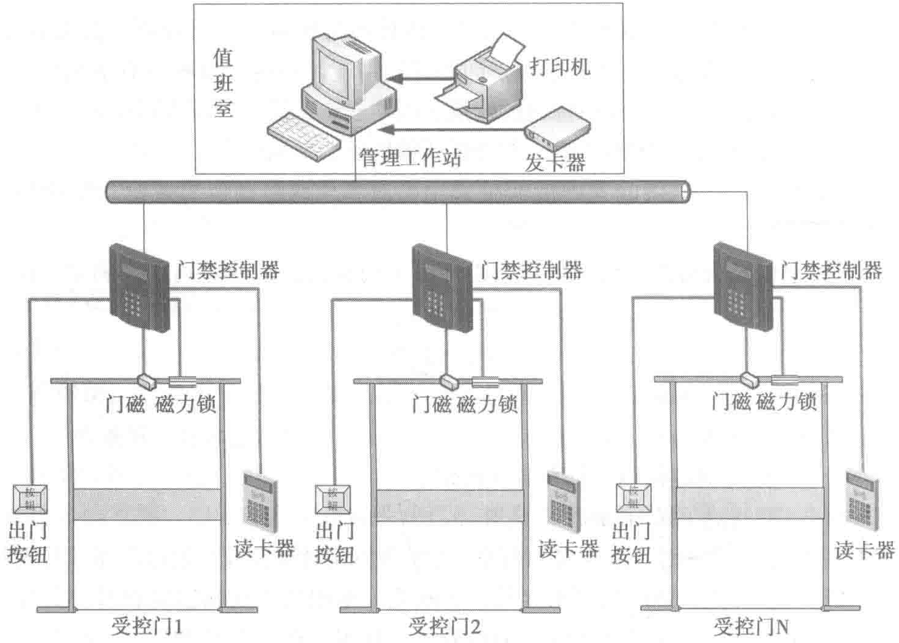

子码流只占用1路带宽。占用网络资源最大的是主码流，每台摄像机均在同时上传视频数据流到存储服务器进行实时存储。因此在视频安防监控系统的网络传输架构设计时，应根据摄像机分辨率和接入数量，合理配置传输线缆和交换机性能。
根据H.264编码格式的计算方法，D1标清摄像机码流压缩后设置范围为1Mb～3Mb，默认码流为2Mb；高清720P摄像机码流压缩后可设置范围是2Mb～6Mb，默认码流是4Mb；高清1080P摄像机码流压缩后可设置范围是4Mb～10Mb，默认码流是8Mb。
视频存储容量的计算方法如下：
根据数据中心的重要性，通常建议图像存储格式宜选用D1格式或更高的分辨率存储，存储时间应在90天。
6.3.3 出入口控制系统
出入口控制系统常被称为门禁系统，是数据中心安全防范系统的主要子系统。它综合应用编码与模式识别、有线/无线通信、显示记录、机电一体化、计算机网络、系统集成等技术，构成一套管理人员、物品进出的智能控制系统。出入口控制系统主要由识读部分、传输部分、管理/控制部分和执行部分以及相应的系统软件组成。出入口控制系统的组成和结构如图6-9所示。
